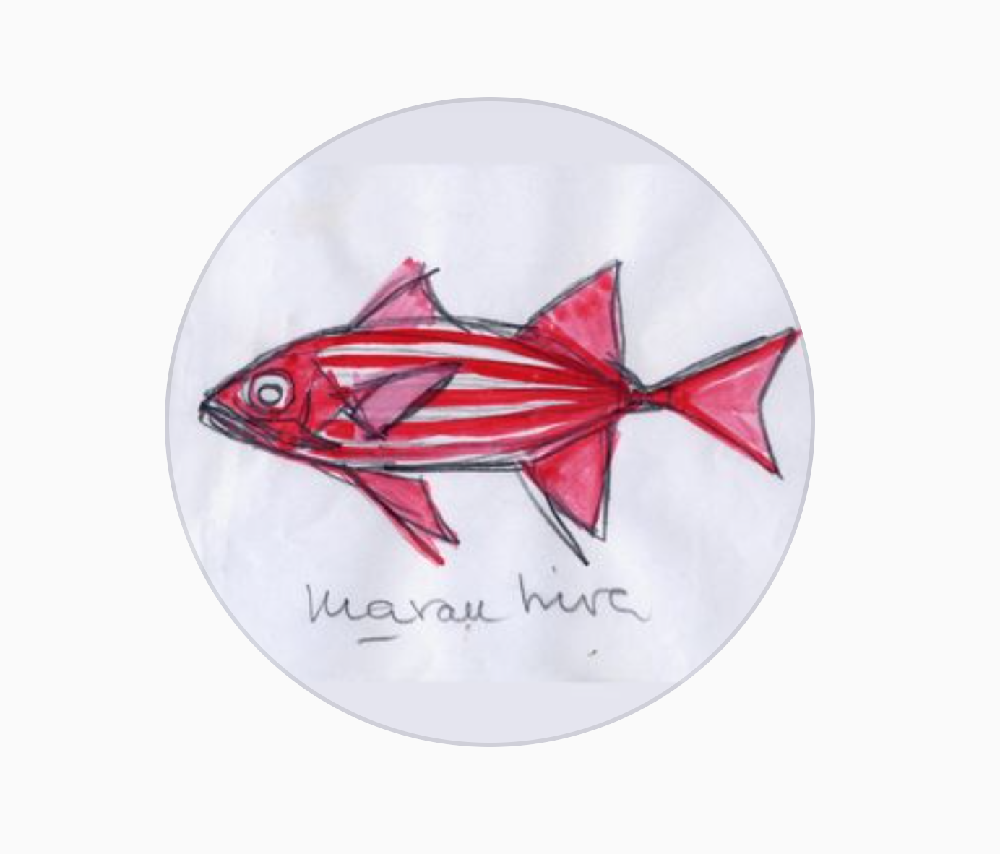

Alfredo Cea Egaña
9.9.1934 Santiago, Chile - 13.5.2016 Coquimbo, Chile

Switch to see another side of me!
Online
Offline
Personal
Profesional
1960
Se recibe de médico
1934
Datos:
Probablemente en las cruces.
Veranos en la playa
Las Cruces
1934
Nace en Santiago de Chile el 9 de Septiembre de 1934